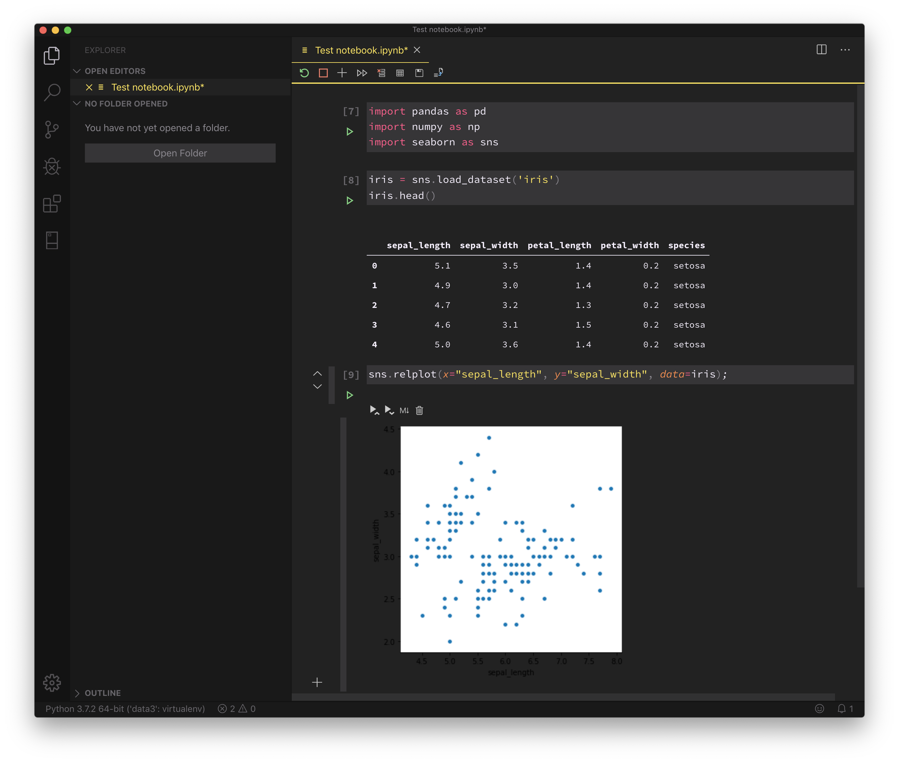

VS Code Is the Best Way to Work in Jupyter Notebooks
Earlier this month, Microsoft announced native support for Jupyter notebooks in VS Code. I just got the chance to try it out today, and it works great.

Why does this matter? Primarily because the web interface for Jupyter notebooks doesn’t have many of the features Python programmers who use IDEs are used to, such as autocomplete and interactive debugging. These features make programming in Python much faster and less error-prone.
I’ve tried to use PyCharm’s Jupyter notebook support in the past, but it ran quite slow even on my very beefy computer. (This was at least a year ago, so it may no longer be true.)
In my testing, VS Code is lightning fast and the autocomplete support is great. Interactive debugging currently works via exporting the notebook as a Python script, and according to their blog post they are planning to add debugging features directly to Jupyter cells in the future.
For anyone who does serious work in Jupyter notebooks, I highly recommend checking out VS Code.
(PyCharm is also generally great, but is more complex and requires a license for Jupyter notebook support. The license is free for academics/research; paid otherwise.)